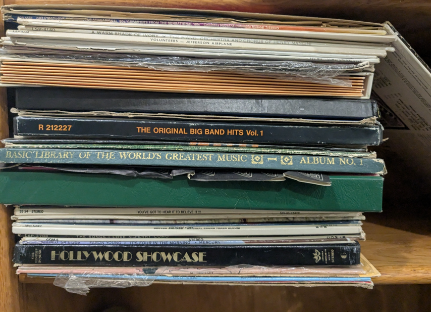
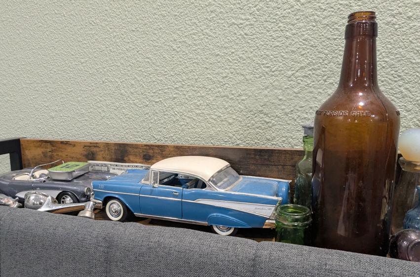
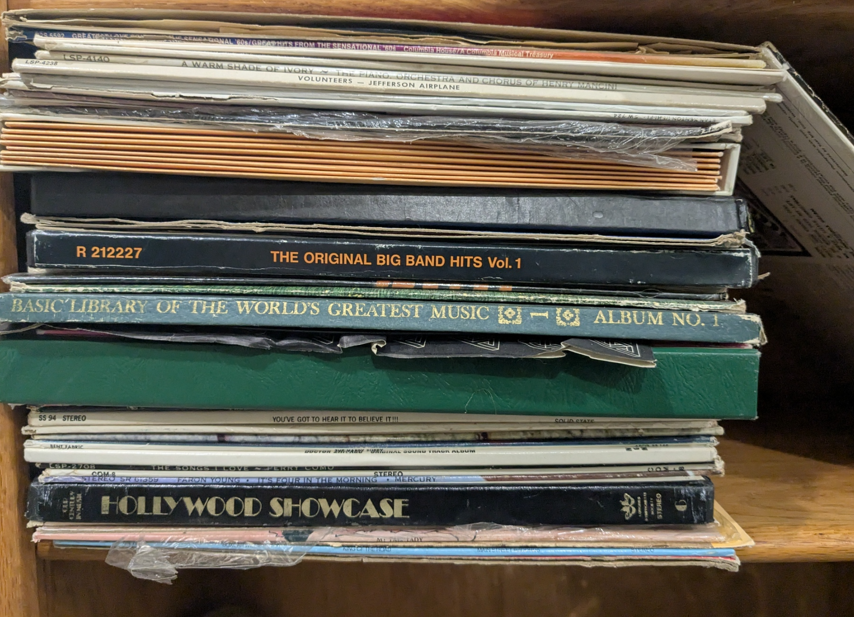
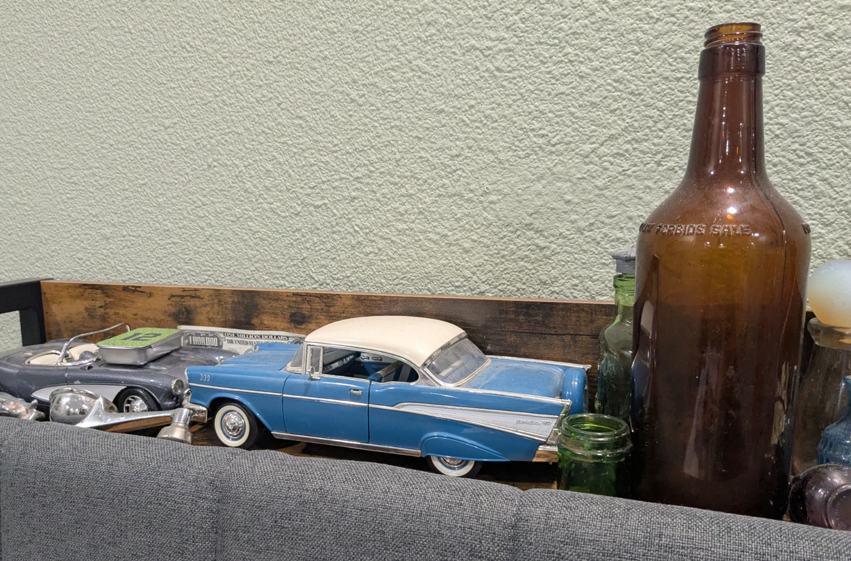
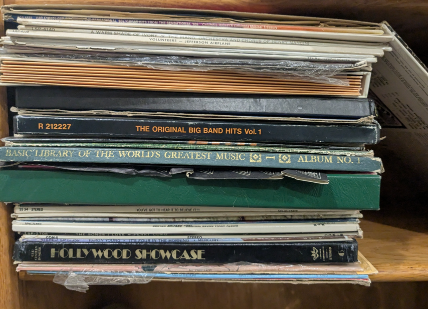
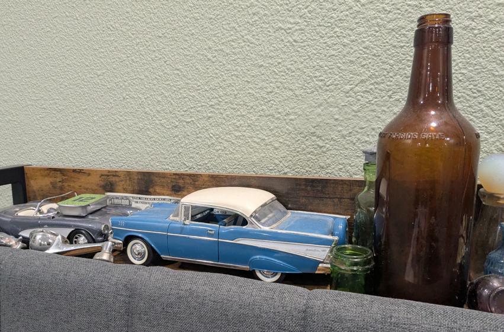

I love collecting old things, new things, anythings! I don't have a set list of things I collect. It could be car parts, art, books, clothes, games, and the list goes on. (I even have demo songs from multiple different artists that weren't released.) Might be a little bit of a hoarder, but I don't collect trash at least.
Some of my favorite things in my miscellaneous collection have got to be either my old car parts or my "scrap." (It's not really scrap, I just don't know what to class it under.) It's bottlecaps and things like that.
I enjoy going out every once in a while to go metal detecting. Metal detecting is where I find most of my cool stuff and is actually where I found those car bits. If you want to metal detect in a state park, you have to fill out forms and talk to the rangers for permission, but once you get past that, it's smooth sailing. Some of my favorite pieces came from my local elementary school. The school was built in the 1800s, and when I went metal detecting there, I found old metal desk parts, silverware, and lead. (Yikes.)
It's pretty much a must to wear gloves and get your tetanus shots, as you're dealing with potentially rusty and sharp metal. Also, bringing tools is a must. (Duh.) A shovel, a “wand,” and a place to put your treasures or trash into. These are just the basic tools. (A wand is just a pinpointing tool so you can find the metal easier after you've dug the hole.)

